Pizzeria · Halles de Wazemmes · Lille
Moltola pizza française bistronomique
Faite maison, de la pâte aux épices, avec des produits locaux et de saison. Un couple au four, un comptoir en inox au cœur des Halles de Wazemmes.
Du mardi au dimanche, dès 10 h
4,9 sur 5 · 114 avis Google
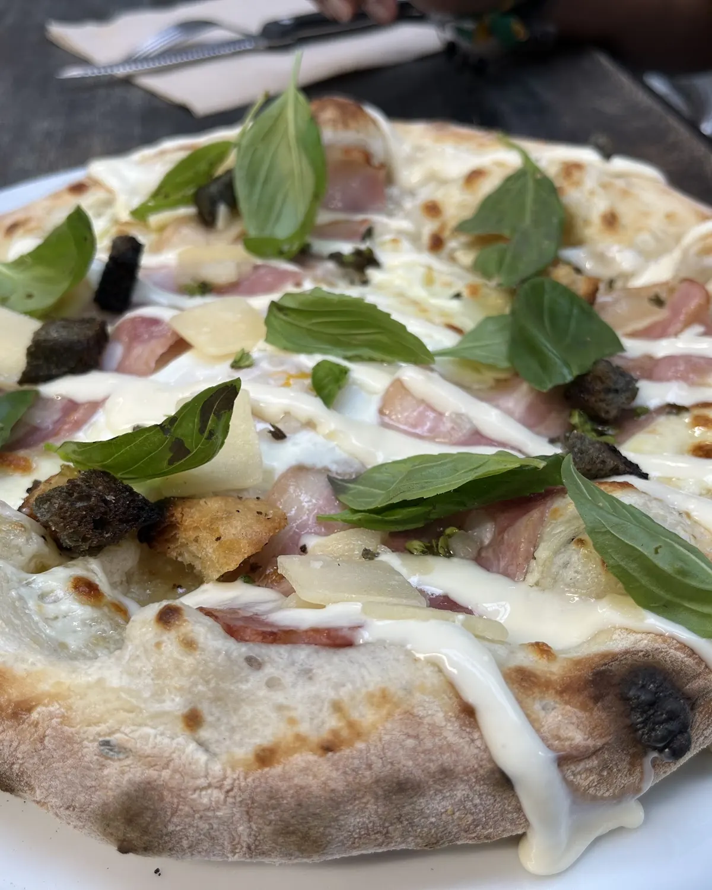
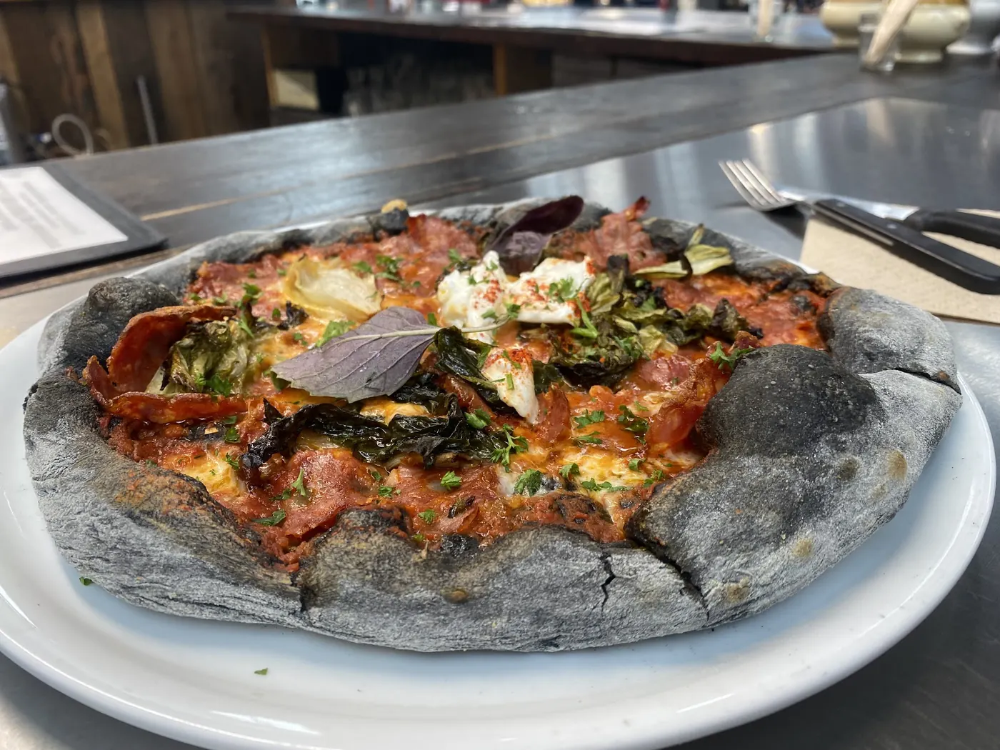
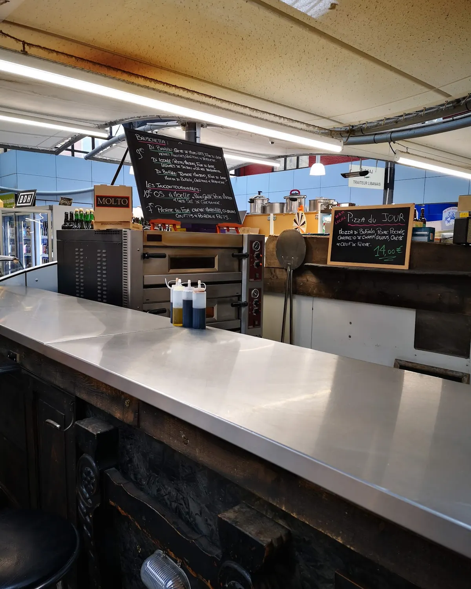
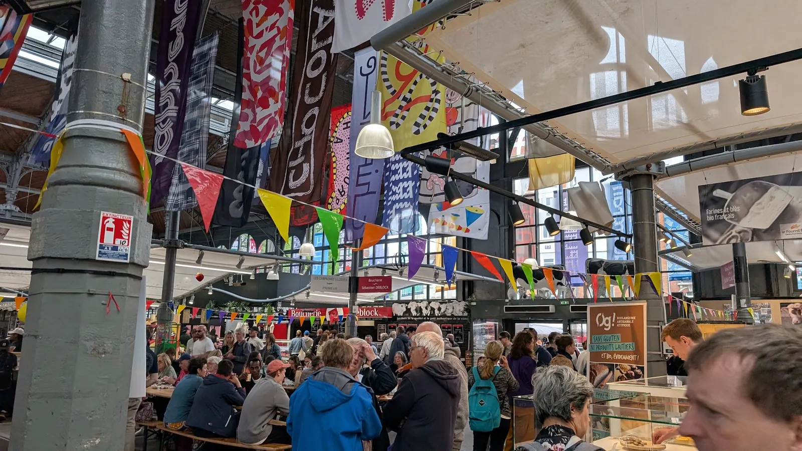
Une pizzeria pas comme les autres
Molto, c'est un comptoir au milieu des Halles de Wazemmes et un couple derrière le four. Ici, la pizza se fait à la française, bistronomique : des garnitures travaillées, des produits frais, locaux et de saison.
La pâte et les épices, faites maison
de la pâte aux épices faite maison au jambon de qualité, rien ne déçoitDjilalli
Local, frais, de saison
100% fait maison, des produits locaux, de saison et fait avec amour !Audrey E.
Un couple aux petits soins
les patrons sont au petit soin malgré le rush du dimanche midiMeg G.
La pâte noire, au charbon
À côté de la pâte classique, Molto travaille une pâte au charbon, noire jusqu'au bord. En pizza ronde à la tomate, garnie de champignons et de légumes, ou servie en barquette au comptoir.
« Je conseille la pâte de charbon est absolument à gouter »
Envie d'autre chose ? « Le pizzaiolo vous fait un calzone ou une pizza deux en un » (Radia A.)
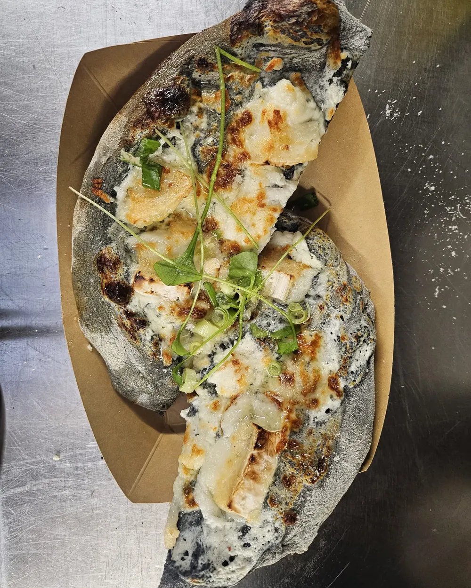
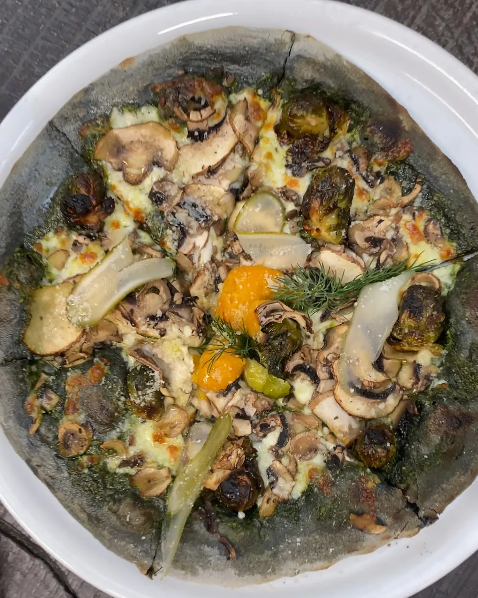
Des pizzas travaillées comme des assiettes
Base tomate, base blanche ou pesto, burrata, herbes fraîches : quelques pizzas de Molto, photographiées sur le comptoir des halles.
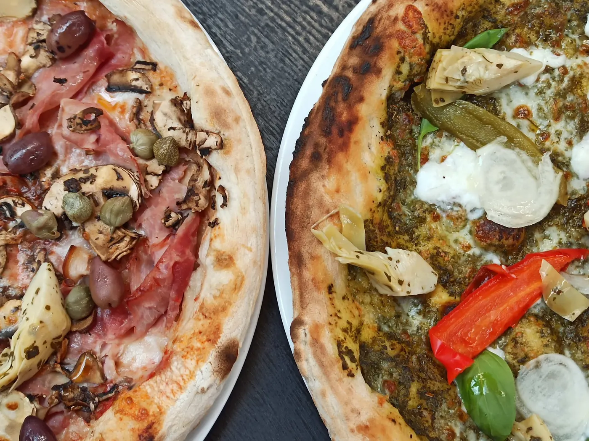
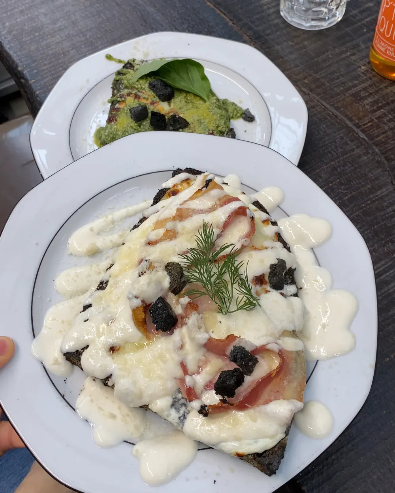
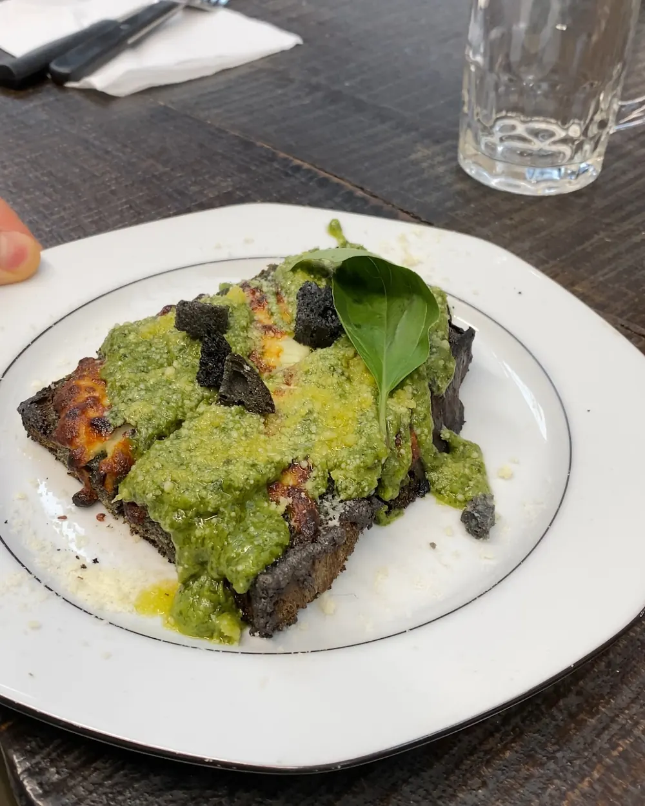
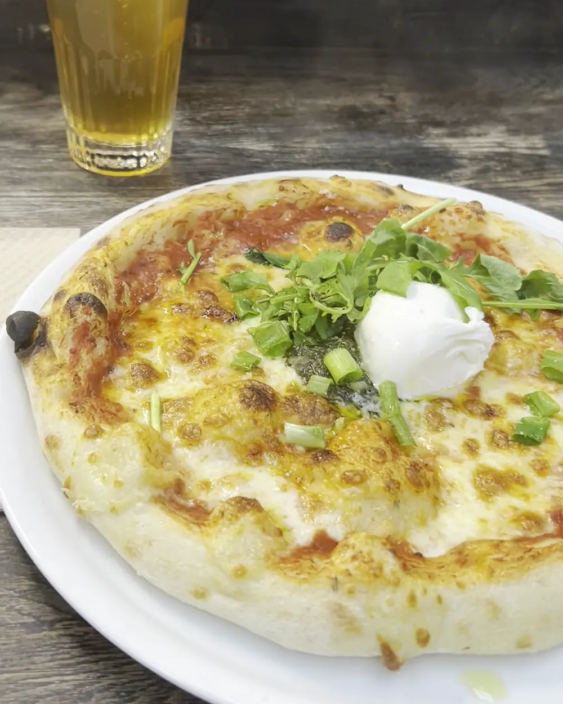
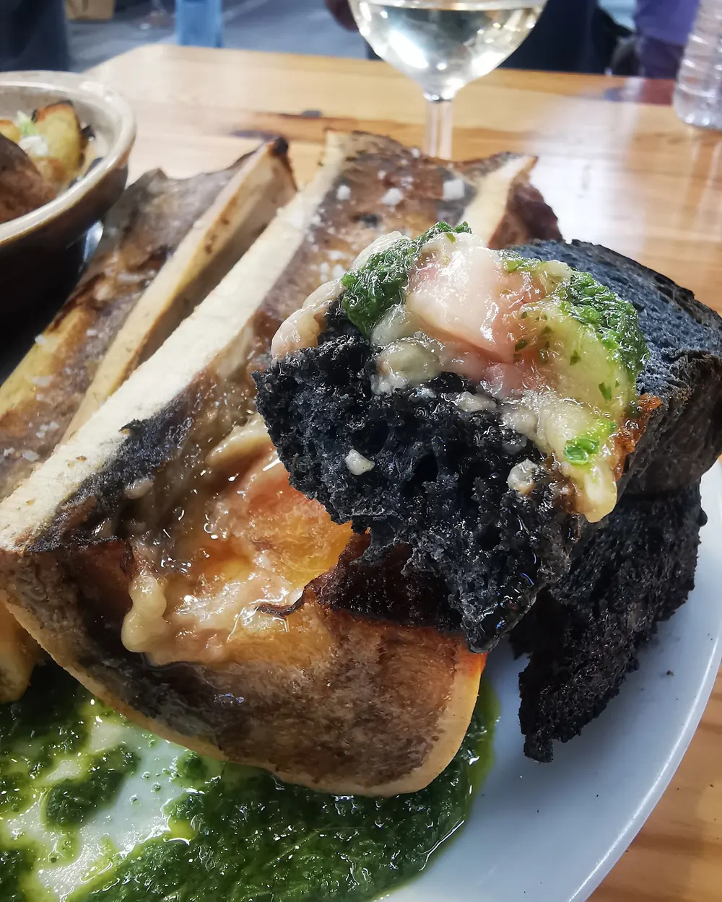
« Ici c’est de la pizza française bistronomique, originale, travaillée et savoureuse. »
Faites glisser pour voir les assiettes
Commandez, passez la prendre à l'heure
Choisissez votre pizza, le jour et l'heure de retrait : elle vous attend au comptoir, même au rush du dimanche midi.
Retrait au comptoir, aux heures d'ouvertureUne question ? 07 83 90 80 60
« On s'y sent comme à la maison »
Six jours sur sept, dès le matin
| lundi | fermé |
|---|---|
| mardi | 10 h – 15 h 30 |
| mercredi | 10 h – 15 h 30 |
| jeudi | 10 h – 15 h 30 |
| vendredi | 10 h – 15 h 30 |
| samedi | 10 h – 16 h 30 |
| dimanche | 9 h – 15 h 30 |
Sur place au comptoir ou à emporter, aux mêmes heures.